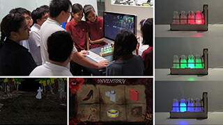

協力：国際ゲーム開発者協会日本（IGDA日本）
センス・オブ・ワンダーナイト2016
8ゲームのプレゼンター決定！
 Fantastic Contraption
Fantastic Contraption- TAINTED
 Chambara
Chambara OPUS:
OPUS:
The Day We Found Earth UnWorded
UnWorded Line Wobbler
Line Wobbler DOBOTONE
DOBOTONE アドバンスド摩訶大将棋
アドバンスド摩訶大将棋
プレゼンテーション概要
| プレゼンテーション | 9月16日（金） 17：30～19：30 |
|---|---|
| 会場 | 幕張メッセ・国際会議場、Hall 11 e-Sports特設ステージ |
| 観覧方法 | 東京ゲームショウ2016ビジネスデイの入場バッジをお持ちの方であれば、参加いただけます。 |
- ※当日先着順でご入場いただけます。満席の場合、ご入場いただけない場合がございます。
- ※9月16日（金）17：30～19：30 にはプレゼンテーションの様子の動画中継を予定しています。
2016年のプレゼンテーション作品
Fantastic Contraption
Northway Games and Radial Games
〔カナダ〕
- 【作品概要】
- Fantastic Contraption is a surreal building game for Oculs Rift and Vive VR. Create life-sized contraptions as tall as you can reach, then send them whirling, flinging, and trundling off to solve puzzles on the other side of a floating island. There are no right or wrong solutions, so bring your creativity.
TAINTED
INSTITUTE OF TECHNICAL EDUCATION/NATIONAL UNIVERSITY OF SINGAPORE 〔シンガポール〕
- 【作品概要】
- 『Tainted』は、視覚・聴覚・嗅覚の相互作用を利用した一人称視点の3Dアドベンチャーゲームで、プレイヤーは古くから伝わるホラーの世界を身をもって体感することができます。このゲームでは嗅覚情報がプレイヤーの体験やストーリー展開の面白さに直結しており、嗅覚主導のゲームが楽しめます。パソコンと、さまざまな香りを閉じ込めた嗅覚刺激モジュールでシステムが構成されており、付属の嗅覚モジュールが伝える嗅覚情報により、プレイヤーは、ゲーム状況（迫りくる恐怖やゲームのヒントなど）を感覚的に捉えつつ、物語を紐解いていきます。このようにして感情（恐怖や好奇心など）が引き出され、没入型のゲーム体験を楽しむことができるのです。 東南アジアの昔話に出てくる幽霊「ポンティアナック」にまつわるストーリー上では、4つの香り（ジャスミン、パイナップル、マンゴー、バナナ）に導かれ、サバイバルゲームが進んでいきます。映画やゲームで香りを感じるという技術はすでに実用化されていますが、そうしたシステムのほとんどが香りをフィードバック作用にしか利用していません。しかし、『Tainted』では、物語やプロット自体が香りに触発されて進んでいき、ストーリーラインとさまざまな感覚を併用したフィードバックシステムのシームレスな繋がりを実現しています。香りが態度や気分、認識に影響するなど、嗅覚と感情の密接な関係を示す研究が数多く発表されていますが、『Tainted』でも同様に、物語において幽霊を連想させるバナナの香りが恐怖を駆り立てます。このように、他に類を見ない方法によって、時を超えた香りを届け、プレイヤーを刺激します。
Chambara
team ok  〔米国〕
〔米国〕
- 【作品概要】
- 『Chambara』は身を隠しながら戦うローカルマルチプレイゲームです。ツートンカラーの世界で、キャラクターたちは自分と同じ色の背景に同化して隠れることができます。ゲーム操作の鍵は身を隠す点にあり、他に類を見ないビジュアルとデザインの融合が特徴的です。かくれんぼをアレンジし、ツートンカラーの洗練されたゲームに仕上げました。ダイナミックに場面が展開する中で、プレイヤーはベタ塗りされた背景に溶け込んで身を隠し、移動したり戦闘したりするときは、視点を動かすことで敵の姿を暴くこともできます。そのためプレイヤーは、こっそりと敵に忍び寄ったり、敵の姿を探したり、待ち伏せしたりと、ドラマティックかつスタイリッシュなバトルを繰り広げることができるのです。『Chambara』は対戦型アクションゲームですが、制作者としては過度に荒っぽい表現や報復的な暴力、真っ向から対立する構図など、不必要なデザインコンセプトから生じる有害な表現は極力排除したいと考えました。対戦型ゲームは、プレイヤー間の対話とスポーツマンシップに則った関係性にこそ価値があり、こうしたプレイからさまざまなプラスの影響が生まれますが、このゲームではこうした対戦型ゲームの可能性を最大限引き出すことに注力しています。なお、本作は、E3 2015、E3 2016、IndieCade、BitBash、Independent Games Festival（IGF）、Orbyt Playなどのイベントでも紹介されており、2015年BAFTA Ones to Watch賞を受賞した他、IGF Best Student Game部門にもノミネートされています。『Chambara』は印象的なビジュアルスタイルと戦術的な奥深さで、プレイヤー間の絆を強め、スリルを間違いなく提供します。
OPUS: The Day We Found Earth
SIGONO 〔台湾〕
- 【作品概要】
- 『OPUS 地球計画』は、ストーリー性のあるゲームや冥王星の議論などが好きな人たちのために制作された惑星観測体験ゲームです。宇宙に離散した人類が地球への帰り道を忘れてしまった遥か遠い未来、無垢なロボット「エム」は、開発者の意思を引き継いで失われた人類の故郷を探すため、宇宙望遠鏡で忘れられた銀河を探索します。こうして「地球を探し出す」というシンプルな目的から始まる物語ですが、ゲームが進むにつれて、この共通の目的に縛られていたキャラクターたちが自分の旅の意味を問い直し、自分自身の目的を発見していきます。天体観測からインスピレーションを受けたゲーム操作が特徴的で、座標やフィルター、セクションといった観測要素を手掛かりに、未知の惑星を探索していきます。本作は、無数の星々からなる広大な宇宙を探索するうちに、澄み切った夜空を見上げた時に感じるような畏敬の念と寂寥感が沸き上がり、さらにそうした感情があまりに圧倒的に胸に迫ってきたときに傍らに友がいてくれる喜びが感じられるように制作されています。宇宙が点と点を繋げた果てしないネットワークであり、私たち一人一人が小さな点だとすれば、私たちの繋がりは一瞬のかすかな脈動のようなものであり、遠くの世界に到達しようとする旅はネットワーク全体に波及するエネルギーの爆発のようなものです。『OPUS地球計画』は、一人取り残された主人公が仲間意識を育んでいく様子を描くことで個が全体となる過程を示した物語です。
UnWorded
Bento Studio  〔フランス〕
〔フランス〕
- 【作品概要】
- 『unWorded』は、文字のみで構築されるゲームです。主人公は重大な事故で入院し、ちょっと変わった不思議な物語を通じて自分の人生を回想する作家で、プレイヤーはゲームを通して作家の心の中へと飛び込み、その内なる独創的な世界を体験します。文字のみで構築されるナラティブパズルゲームの世界で、記憶の欠片を集めて思考を纏め直す作家を手助けしてください。想像力を駆使してこれらの文字から物体を生み出し、作家の心の中にあるものを解き明かしましょう。
Line Wobbler
Robin Baumgarten 〔英国〕
- 【作品概要】
- 『Line Wobbler』は、スチール製のバネで前後左右に揺れ動くカスタムコントローラーと、全長5メートルの光り輝く細長いLEDディスプレイが一体となったカスタムハードウェアゲームです。ゲームはすべてArduino上で遊ぶことができます（音声付き、ドット表示、120+fps対応）。一次元のダンジョンを這うように進むゲームで、ステージごとに難易度が上がっていく中、プレイヤーは障害物を操作して敵と戦いながらゴールを目指します。斬新な入力メカニズムを利用して物理的空間をゲームに取り込んだLine Wobblerは、ミニマルなゲームデザインを追い求めた実験的なゲームと言えます。一次元のみという制限があるからこそ、やりがいのある面白いゲームとなっており、アーティスティックな演出や素晴らしい技術的な仕上がりを生み出しています。
DOBOTONE
Videogamo 〔アルゼンチン〕
- 【作品概要】
- DOBOTONEは、パーティー用に特別にデザインされたテレビゲームコンソールで、5人同時プレイが楽しめます。さまざまなパーティーゲームが内蔵されており、プレイヤー4人が2ボタンコントローラーを使って対戦します。5人目が絶大な力を持つゲーム・リミックス担当となり、コンソールの専用スイッチやボタンを操作してリアルタイムでゲーム設定を変えていくことで、難易度を上げて（パーティーを盛り上げて）いきます。DOBOTONEはパーティー・ニーズに対応するため、パーティー用に特別にデザインされたシステムです。（例え酔っていても）簡単に対応することができるシステムで、ゲームを素早く選び、コンソール本体で核となる設定を調整して面白おかしく遊ぶことができます。ゲームのルールはすべて直観的に遊べ、どのゲームも瞬時に内容が分かるようにしています。チュートリアルの時間は必要ありません。誰がどれを動かしているかもすぐ分かります。シンプルにボタンを押して遊ぶ、それだけです。また、コンソールに関しては、モダンシステムと一線を画す最新のものにしたいと考えました。中央のコントロールボードでスピードや難易度、ズームや画面調整、そしてもちろん効果音や音楽の音量調整もできてしまいます。楽しい時間を中断してわざわざゲーム内のメニューを開く必要もありません。さらに、タイムラグに悩まされることなくゲーム内を縦横無尽に駆け回ることができる2つの方向キーと、瞬時にプレイヤーのスイッチのオン・オフの切り替えができる4つのパーソナルボタンも搭載しました。また、1つのゲームを繰り返し行ったり、次々に違うゲームをランダムに自動選択したりすることもできます。格闘ゲームやパズルゲーム、レーシングゲームのような定番のゲームの他、今までに見たことがない実験的なゲームも内蔵されており、すべて2ボタンコントロールで操作することができます。このゲームは、昔ながらの方法でゲームを楽しむだけでなく、一種の「ハッキング」ゲームも楽しんでもらいたいと制作されました。コンソールの主導権を持つ者だけでなく、すべての人が手を伸ばしてゲーム全体を掻き回す楽しさを体験できます。
アドバンスド摩訶大将棋
大阪電気通信大学 デジタルゲーム学科 高見研究室 〔日本〕
- 【作品概要】
- 摩訶大将棋は、平安時代後期の大型将棋を起源とする日本独自の将棋です。縦横19マスの将棋盤と、敵味方合わせて192枚、50種類の駒を使いますが、その駒数の多さのため、実際に対局されたことはなかっただろうと考えられてきました。４年前より私たちの研究室では、室町時代の古文書や平安時代の日記、随筆に基づいて、摩訶大将棋のルールの復刻を進め、ルールの通説（江戸時代の古文書の内容）の多くは間違いであるという結論に至りました。その結果、摩訶大将棋は実際に対局された将棋であり、非常に面白いボードゲームだということがわかっています。 本エントリーは、この摩訶大将棋にコンピュータ支援機能とネットワーク対局機能を付けた電脳摩訶大将棋（＝アドバンスド摩訶大将棋）についてのものですが、SOWNのプレゼンでは、制作したゲームの内容に加え、是非紹介させていただきたく思いますのは、復刻されたルールや駒の意味、将棋の伝来に関する事柄です。摩訶大将棋は、ボードゲーム／遊戯であると同時に、古代の合戦や仏教の世界観、陰陽道の占いを、絶妙のゲームシナリオでもって表現する将棋です。また、摩訶大将棋の駒の起源を辿れば、薬師如来、十二神将、伎楽、狛犬と師子、法華経、易占、古代ペルシアとの関連性が見えてきます。字数800字の範囲ではこれらを具体的に記述することはできませんが、摩訶大将棋には、古代日本の文化史が盤と駒の向こう側に見え隠れしていることは確かです。 復刻を重ねるにつれ、摩訶大将棋のルールのもつ緻密さが明らかになり、したがって、対局されたに違いないことも明らかで、また、平安時代後期にこのようなゲームを創作したゲームクリエイターが日本にいたことにも驚かされています。エントリーする私たちは、摩訶大将棋の制作者ではありませんが、長らく埋もれていた摩訶大将棋の発掘者として発表させていただきたく思います。